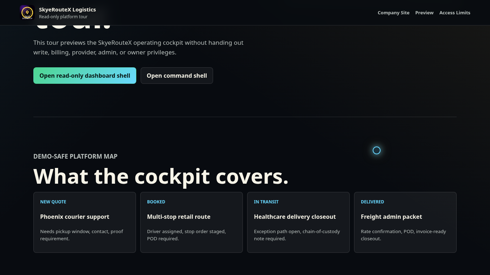

Umbrella
SOLEnterprises
The company-level home for the network, ownership map, active surfaces, and migration ledger.
Current pageUmbrella company for proof-first operating systems
A holding-company lane for the operating systems, AI infrastructure, logistics workflows, email systems, legal/trust surfaces, and public company websites built under Skyes Over London LC, SkyeSol, and the MetrAIyux 0S.

Company map
SOLEnterprises is the top public map. SkyeSol explains the systems-builder company, SkyeRouteX presents the logistics company, and the MetrAIyux 0S keeps the shared gate, deployment, proof, and founder command records behind the scenes.
Umbrella
The company-level home for the network, ownership map, active surfaces, and migration ledger.
Current pageOperating system
Shared gate, SkyeNet deployments, Founder Command, owner proof, SaaS provisioning, and mounted app control.
Owner gate
Systems company
Governed AI, premium web, portals, operating lanes, case studies, SkyeSuite, and founder/operator authority.
Open SkyeSol
Logistics company
Transportation, dispatch coordination, route support, last-mile delivery, POD, and closeout workflows.
Open SkyeRouteXOperating lanes
The public story is deliberately simple: company, systems, logistics, proof. The internal architecture stays shared through FS27/SkyGate/Free99 so each new app gets the same owner lane without inventing a separate admin password.
Live infrastructure
Proof-first boundary
SkyeNet public websites are canonical for the live company surfaces. Netlify-era links are legacy mirrors unless a current SkyeNet deployment says otherwise. Provider-dependent work like external live GPS, SMS, and AI call handling should only be sold as active after credentials and receipts are present.
Founder line
Founder/admin access stays tied to the shared 0S gate and the internal owner email recorded in Founder Command. Customer signups still provision customer-owned records from the customer email submitted at signup.